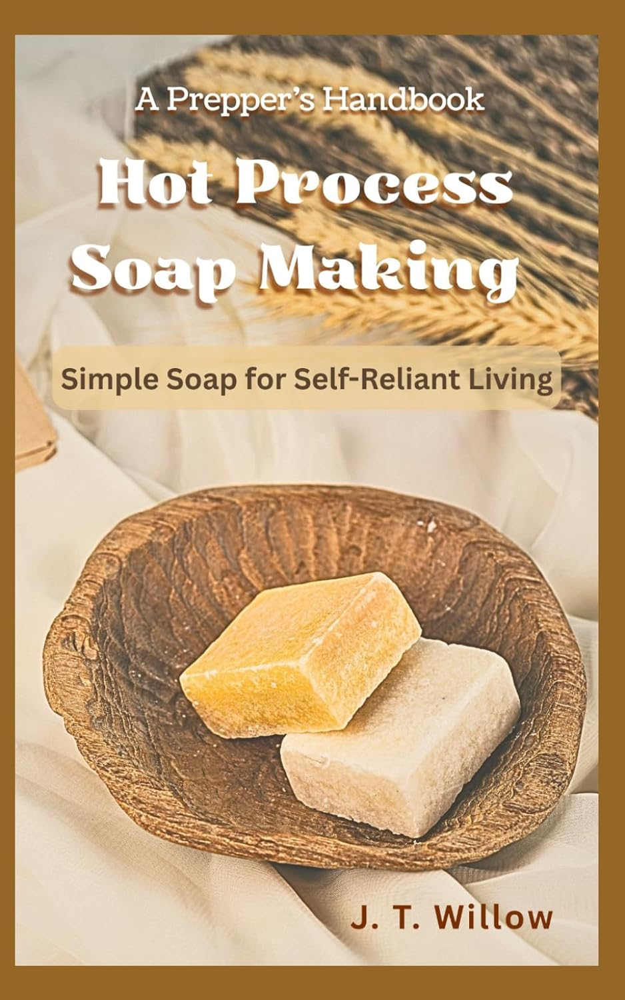

Discoverability Score ?Your Discoverability Score measures how easy it is for readers to find and buy your book on Amazon. The higher your score, the more visible your book is and the more sales it generates.
23 / 100
Getting Started ?Getting Started: In the early stages of building discoverability. Focus on getting your listing set up correctly and gathering your first reviews. Hold off on ads until your foundations are in place.
Early Stage: Your book is starting to build momentum. Continue strengthening your listing, grow your review count, and consider activating Amazon Ads.
Growing: Solid foundations and gaining traction. Scale what is working: more reviews, optimised ad campaigns, and new formats.
Established: Highly discoverable and performing well. Maintain momentum: protect your reviews, refine your ads, and leverage your visibility for additional titles.

Listing i
Your Listing score covers your title, subtitle, description, categories, backend keywords, cover, and price. Each element plays a role in how Amazon surfaces your book to the right readers.
10 / 20
Reviews & Ratings i
Verified reviews are one of the strongest signals Amazon uses to rank and convert books. More reviews improve organic rank, which drives more sales, which generates more reviews. Target 15 before running ads, then keep building.
0
★★★★★ Rating i
Your star rating is the average score left by readers who have reviewed your book. A rating of 4.0 or above is the target. The best way to maintain a strong rating is to deliver on what your title and description promise.
Unrated
Sales/mo i
Your estimated monthly revenue from this book. $500/mo is your first milestone. $1,000+/mo is the target. Reviews, a hardback edition, and Amazon Ads are the most effective ways to grow this figure.
$500
$1,000+
Amazon Ads ?Amazon Ads increase your book’s visibility in search results and on competitor pages. We recommend activating ads once your listing is fully optimised and you have at least 15 reviews. Running ads before those foundations are in place wastes budget.
Not active
Best Seller Rank
Your BSR
1,472,845
Needs Visibility
Niche Average
302,321
Similar Level
Top Competitor
32,109
Target
Your book currently ranks below the niche average, which is expected at zero reviews with no advertising. The top competitor sits at 32,109. Reviews and a targeted ad campaign are the fastest route to closing that gap.
Book Summary
A Prepper’s Handbook to Hot Process Soap Making: Simple Soap for Self-Reliant Living
by J. T. Willow
★★★★★
(0)
A Prepper’s Handbook to Hot Process Soap Making is a practical, self-reliance guide to making natural soap using the hot process method. It covers everything a beginner needs to produce their own soap from scratch, and targets the growing prepper and homesteading readership. Available as a paperback at $9.99.
Readerbull niche research records over $3,000 every month from the top earners across 24 soap making books. Within 6 to 12 months, your title could potentially earn up to $300 a month. Your book is already listed on Amazon with a keyword-optimized title in a confirmed buying niche. Reviews and ads are all that stand between you and that result.
2
Books Selling Well In This Niche
Medium Competition
~$3.1k/mo
KDP Niche Revenue
✓ Real Demand
Evergreen
Content Type
✓ Stays Relevant
Professional Assessment
Readerbull niche research records over $3,000 every month from the top earners in the soap making books category. The benchmark to target first is $300 per month, generated by a book with just 23 reviews and an active ad campaign. Your book has a keyword-optimized title and is priced at $9.99.
Reviews come first: build to 15 via ARC outreach before activating ads. While building reviews, fill your 7 KDP backend keyword fields and request a second category placement to strengthen organic reach. At 15 reviews, launch Sponsored Products for the paperback. Reviews, a strong listing, and ads working together move the Sales/mo bar.
Keyword-Rich Title
Sub-Category #274
Paperback Available
(0) Reviews
No Ads Running
Paperback Only
$9.99
💡 No Reviews. No Ads. No Revenue. This Is the Gap.
Every book earning consistently in the soap making niche has reviews and advertising. Your book has a keyword-optimized title and is priced at $9.99. The path from $0 to $300 per month begins with 15 reviews and your first ad campaign.
Currently: $0/mo · paperback only · no ads
Target: $300/mo · 23 reviews · with ads running
Marketing Strategy
Step 1: Update Your KDP Keywords
Readerbull niche research finds 21 keyword variations for “soap making books,” with search volumes ranging from 1,027 to 4,352 monthly searches. Most of those searches include product keywords (molds, stamps, cutters) and free-book variations that are not your market. Your 7 KDP backend keyword fields need to target buyers who are actively searching for a paid craft book, not free downloads or supplies.
✓
Lead with buyer-intent book terms
The highest-value keywords for your book are: “soap making books for beginners,” “soap making books with recipes,” and “artisan soap making.” These reach buyers looking for a paid, practical guide. Your title already includes “hot process soap making” which is an important long-tail term. The backend fields should extend your reach into adjacent buyer searches without duplicating what is already in your title.
✓
Skip free-book and product keywords entirely
Research shows high search volume for “free soap making books,” “soap making free kindle books,” and product terms like “acrylic soap stamps” and “soap molds.” None of these reach a buyer who will pay $9.99 for a paperback. Using any of them wastes a backend keyword slot. Every slot used on a product or free-book search is a slot that paying customers cannot find you through.
✓
Lean into the prepper and homesteading angle
Your subtitle “Simple Soap for Self-Reliant Living” opens the door to prepper and homesteading search terms that competitors in the soap making category are not using. Keywords like “homesteading books” and “prepper books self sufficiency” reach a highly motivated reader who is already buying multiple craft and survival guides. This is a differentiated position no competitor in your niche currently holds.
✓
Use the Readerbull keyword recommendations in this audit
The keywords section below contains the buyer-intent terms filtered from niche research. Copy them directly into your 7 KDP backend keyword fields. Do not leave any fields empty: each unused field is a missed browse path.
↓
Step 2: Build to 15 Reviews Before Running Ads
Starting from zero reviews, this is the most important action on the entire dashboard. A book with 23 reviews earns $300 per month in this niche with ads running. Reaching 15 reviews gives your listing the social proof it needs to convert ad clicks into paid sales. Every review also improves your star rating, which is the first thing buyers check before purchasing a craft book.
Your book targets preppers and homesteaders. This readership is tight-knit, community-driven, and loyal to authors who understand the lifestyle. A well-positioned ARC campaign reaching this audience will generate reviews from readers who genuinely connect with the content.
✓
Use an ARC service to reach 15 to 25 reviews quickly
BookSirens, Hidden Gems, and NetGalley connect authors with readers who have opted in to receive free books in exchange for honest reviews. These are legitimate, Amazon-compliant services. The homesteading, prepper, and natural living readership is active on these platforms. A well-targeted ARC campaign for this title could generate 15 to 25 reviews within 4 to 6 weeks.
✓
Target prepper and homesteading communities directly
Reddit’s r/preppers and r/homesteading have hundreds of thousands of members. Self-sufficiency and natural living Facebook groups are populated by exactly the readers who buy this type of book. A genuine post sharing your book and offering an ARC copy will reach motivated readers who are very likely to leave a detailed, thoughtful review.
✓
Add a review request inside the book
Place a natural, warm request mid-book and at the back. Many readers who genuinely enjoyed the book simply never think to leave a review without a prompt. Do not ask for a specific star rating. Amazon’s terms prohibit this. A genuine ask yields genuine responses and costs nothing to add.
↓
Step 3: Optimise Categories
Your book currently ranks at #274 in Soap Making Books and #80,631 in Education and Teaching. Dual-category placement is already working. The opportunity is to add a third category that is more closely aligned with your prepper-and-homesteading angle, where the competition is lighter and your book is the most relevant result in the room.
✓
Request Books › Crafts, Hobbies & Home › Home Improvement & Design › Cleaning, Caretaking & Organizing as a third placement
Email KDP support or use Author Central to request an additional category alongside your existing two. A sub-category with lighter competition means your BSR position translates directly into a higher browse rank. This increases the chance of earning an orange Best Seller ribbon, which improves click-through rates in search results without any additional cost.
✓
A Best Seller badge is achievable in the right sub-category
As reviews and ads push your BSR down, a well-chosen sub-category with a higher BSR threshold for the top spot can deliver the orange badge. That badge appears in search results next to your cover and meaningfully improves click-through. One email to KDP support requesting the category is all it takes.
Step 4: Launch Amazon Ads for the Paperback
This is the action that moves your Sales/mo bar. Reviews get you ready. Ads move the bar. Start conservatively at $5/day, prove the ACoS (Advertising Cost of Sale: the percentage of each sale spent on advertising), then scale. At this price point, aim to keep ACoS below 40%. Your realistic first benchmark is $300 per month, achieved by a competitor with 23 reviews and ads running.
Amazon Ads carry a financial risk when learning. Start small and ask for help and support if needed.
✓
Start with Sponsored Products at $5 to $7/day
Target keyword phrases: “soap making books for beginners,” “soap making books with recipes,” and “hot process soap making.” These reach buyers actively looking for a paid practical guide. Run for 14 days before reviewing results. Do not increase budget until the campaign shows a profitable ACoS.
✓
Add Sponsored Display ads on top competitor ASINs
Target the product page of The Natural Soapmaking Handbook (BSR 32,109) and The Soap Making Bible (BSR 129,084). Buyers browsing those pages are already in a paid-book buying mindset for this exact topic. A well-placed display ad intercepts that intent at zero extra keyword cost.
✓
Target ACoS below 40% for profitability
ACoS tells you what percentage of each sale went on ads. At this price point, 40% or below is your profitability target. Pause any keyword without a sale after 14 days. Scale only what converts consistently. The Soap Making Bible (23 reviews, $300/month with ads) is your realistic 60 to 90 day benchmark.
Best Performing Competitors: Soap Making Books
| Book | Reviews | Rev/Mo |
|---|
| The Natural Soapmaking Handbook Top Earner | 474 | $2,807 |
| The Soap Making Bible 90-Day Target | 23 | $300 |
The Soap Making Bible earns $300/month with just 23 reviews and ads running. That is your 90-day benchmark. At 15 reviews and a $5/day Sponsored Products campaign, your book is positioned to compete directly.
Market Analysis
Niche Summary
The soap making books niche is active with paying buyers and growing search demand. The most accessible target in this niche is $300 per month, produced by a book with just 23 reviews and an active ad campaign. The gap between $0 and $300 is two things: reviews and advertising.
✓
A book with 23 reviews earns $300 per month
The Soap Making Bible earns $300 per month with 23 reviews and a paid paperback. This is your 90-day target. It shows that a moderate review count with ads produces consistent revenue in this niche without requiring hundreds of reviews. Your book needs 15 reviews to reach the launchpad for this outcome.
✓
Your BSR of 1,472,845 sits above the niche average
The niche average BSR is 302,321. Your book currently sits above that level, which is expected at zero reviews with no advertising. As reviews drive organic rank and ads drive paid visibility, your BSR will fall toward and then below the niche average. Every sale moves the number down and compounds future discoverability.
✓
Your $9.99 price is 38% below the niche average of $16.15
Pricing at $9.99 makes your book attractive to price-sensitive buyers but compresses your royalty margin. Once reviews build confidence in the title, consider moving to $11.99 or $12.99. A higher price point means your ad spend converts more profitably: the same ACoS produces more net income per sale.
Niche Data: Soap Making Books (2 of 24 books with revenue data)
| Book | BSR | Rev/Mo | Reviews | Ads |
|---|
| The Natural Soapmaking Handbook Top Earner | 32,109 | $2,807 | 474 | Unknown |
| The Soap Making Bible 90-Day Target | 129,084 | $300 | 23 | Unknown |
| Your Book | 1,472,845 | $0 | 0 | No |
Revenue data is available for 2 of the 24 books in this niche. The niche average monthly revenue is $900 per book across the full keyword search. Full competitor revenue data will produce a more complete picture.
Book Portfolio Opportunity
A Second Title Compounds Discoverability
Two books by the same author in the same niche cross-sell each other automatically. Amazon’s “customers also bought” system means every reader who buys one title is shown the other. Each new title also adds a new keyword footprint, a new category placement, and a new set of search rankings.
1
Hot Process Soap Making for Beginners: Step-by-Step Recipes for Natural Handmade Soap
The keyword “soap making books for beginners” generates 1,589 monthly searches and is one of the strongest buyer-intent terms in the niche. A companion beginner guide would capture this traffic directly, cross-sell from your existing title, and own two positions in the same search results page.
2
The Prepper’s Guide to Natural Home Products: DIY Soap, Shampoo, and Cleaning Essentials for Off-Grid Living
This extends your prepper angle into adjacent self-reliance products. The same buyer who purchases your soap making guide is also looking for shampoo, cleaning products, and natural remedies. A broader self-reliance guide reaches a larger audience with a higher per-book value and opens doors into the homesteading and off-grid categories.
3
Artisan Soap Making with Essential Oils: 30 Natural Recipes for Beautiful Handmade Soap
The keyword “artisan soap making” generates 2,380 monthly searches and is the highest-volume non-product, non-free search term in the research. A recipes-led artisan guide targets a more premium buyer looking for beautiful, gift-worthy soap. This is a different reader profile from the prepper audience and expands your total addressable market significantly.
2026 Keyword Timing Opportunity
The keyword “soap making books 2026” generates 1,154 monthly searches and is a confirmed buyer-intent timing term. Readers actively search for the most current guide in a craft category. Publishing a second title in late 2026 with a 2026 or 2027 positioning in the title or subtitle is a low-cost way to capture this timing-specific traffic before competitors do.
Focus on Steps 1 to 4 first. Get your reviews to 15 and your first ad campaign running before writing anything new. Once the existing book earns consistently, these second-title opportunities represent low-competition entry points with built-in cross-sell potential from day one.
Keywords
Readerbull niche research for “Soap Making Books” (21 keywords found). Confirmed search volumes shown. Free-book variations, product supply terms, and non-English keywords have been flagged as Skip. These are not your buyer. The Readerbull Recommended panel shows the buyer-intent terms suited to your paperback. Click + Add to save to your KDP list.
Quick Wins
Do These in Order: Sequence Matters
1
Fill all 7 KDP backend keyword fields this week
Lead with “soap making books for beginners,” “soap making books with recipes,” and “artisan soap making.” Add prepper and homesteading adjacent terms to differentiate from competitors who only target soap-making keywords. Takes 15 minutes. Costs nothing. Increases the number of searches your book can appear in immediately.
2
Sign up to an ARC service and target 15 to 25 reviews
BookSirens or Hidden Gems. The prepper, homesteading, and natural living readership is active on these platforms. This is the fastest legitimate path from zero reviews to the 15-review threshold needed for ads to convert profitably. Target 15 to 25 ARC readers. Expect results within 4 to 6 weeks.
3
Reach prepper and homesteading communities directly
Reddit’s r/preppers and r/homesteading, plus natural living Facebook groups, are populated by exactly the reader who buys this book. A genuine post offering free ARC copies in exchange for an honest review can generate 10 to 20 reviews at zero cost. This readership is loyal and detailed in its reviews.
4
Request a third category from KDP and add a review prompt inside the book
Email KDP support to request an additional category in Crafts and Home Improvement alongside your existing two placements. At the same time, update your paperback file with a warm review request mid-book and at the back. Both actions permanently improve future sales without ongoing cost.
5
Launch Sponsored Products at $5 to $7/day once at 15 reviews
Target “soap making books for beginners,” “soap making books with recipes,” and “hot process soap making.” Add Sponsored Display on the ASINs for The Natural Soapmaking Handbook and The Soap Making Bible. Review ACoS at day 14. Pause non-converting keywords. Scale what converts. Benchmark: The Soap Making Bible at $300/month with 23 reviews.
Readerbull Assessment
The data is clear. Every book earning revenue in the soap making books niche has reviews and active advertising. Your book has a keyword-optimized title, two confirmed category placements, and a distinctive prepper-and-self-reliance angle that no direct competitor currently owns. The foundation is solid. The gap is execution.
Fill your backend keywords and launch an ARC campaign this week. Build to 15 reviews. Request a third category. At 15 reviews, launch Sponsored Products at $5/day for the paperback. The 90-day target is $300 per month. The 12-month goal is $825 or above as your review count compounds.
Your action sequence:
1. Fill 7 backend keyword fields → 2. Launch ARC campaign (target 15 to 25 reviews) → 3. Request third category → 4. Add review prompt inside the book → 5. Launch Sponsored Products at 15 reviews → 6. Scale on profitable ACoS
This audit is part of the Readerbull platform. For coaching, ad campaign management, or Done For You services, contact Readerbull directly.
Note from J. T. Willow: I would welcome the opportunity to support you on your publishing journey.
Whether you are looking for free coaching support or a managed service, I can help you with sponsored ad campaigns, editing, formatting, or cover design and more.
Please feel free to send me a direct message if you’d like to explore further.